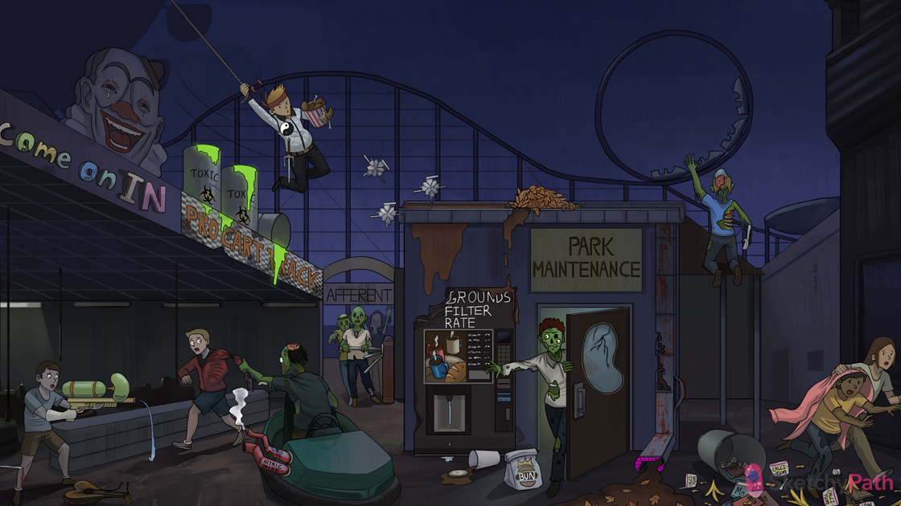

Necrotic muddy drain pipe: acute tubular necrosis (ATN) is the most common form of acute kidney injury (AKI)
Ischemic zombie: ATN is caused by ischemia of tubule cells
Bloody wound: severe blood loss → systemic hypoperfusion → prerenal AKI → ischemic damage to kidney → ATN
Broken heart string: MI → systemic hypoperfusion → prerenal AKI → ischemic damage to kidney → ATN
Constricted red exhaust pipe: ischemia damages endothelial cells → decreased nitric oxide (vasodilator) and increased endothelin (vasoconstrictor) production
Constricted red sleeve: ischemic injury to the endothelium of the afferent arteriole leads to vasoconstriction
Zombies stuck at AFFERENT entry way: vasoconstriction of the damaged afferent endothelium impedes blood flow to the glomerulus
Broken grounds filter rate: glomerular filtration rate (GFR) is decreased in ATN
Muddy epithelial leaves: ATN causes “muddy brown” casts in the urine sediment (sloughed tubular cells)
Obstructing epithelial leaves: sloughed epithelial cells accumulate in the tubular lumen, causing obstruction
Mud spilling on grounds filter rate: obstruction of tubular lumen by sloughed tubular cells in ATN further reduces GFR
Broken down PRO CART TRACK: The proximal convoluted tubule is particularly susceptible to ischemic injury in ATN
Broken down loop-de-loop: The thick ascending limb of the loop of henle is particularly susceptible to ischemic injury in ATN
Patchy tube lining: in ATN, the nephron will show dilated tubules with a patchy loss of epithelial cells
Broken tube edge and rusty holes: in ATN, sections of the nephron will show ruptured basement membrane and vacuolization of epithelial cells
“Come on IN”: the initial insult (e.g. MI, sepsis, hemorrhage) occurs during the INITIATION phase of ATN (lasts ~ 36 hours)
Smiling clown face: the INITIATION phase of ATN is associated with fairly normal kidney function and urine output
Maintenance shed: AKI develops during the MAINTENANCE phase of ATN with severe metabolic derangements and reduced urine output (lasts ~1-2 weeks after initial insult)
Cracked kidney on maintenance shed: the maintenance phase of ATN is associated with symptoms of AKI (e.g. oliguria, increased creatinine, fluid overload, metabolic abnormalities)
BUN bag: BUN is elevated during the maintenance phase of ATN
Credit card slot: creatinine is elevated during the maintenance phase of ATN
Trickle: the maintenance phase of ATN is associated with oliguria (<400mL/24hr)
Covering up with epithelial jacket: tubular re-epithelialization occurs during the recovery phase of ATN (!1-2 weeks after initial insult)
Wet crotch: the recovery phase of ATN is marked by profound diuresis (urine output up to 3-5 L/day)
Spilled banana peels, peanut shells, Calci-Yum cups, and magazine trash: the recovery phase of ATN can cause electrolyte abnormalities (e.g. hypokalemia, hyponatremia, hypocalcemia, and hypomagnesemia)
Toxic waste at the Pro Cart Track: the proximal convoluted tubule is the primary site of injury in NEPHROTOXIC ATN
Sai weapon: aminoglycosides can cause nephrotoxic ATN
Chomped chicken leg: damaged muscle (e.g. crush injury, rhabdomyolysis) can cause nephrotoxic ATN
Heme ninja stars: damaged muscle releases nephrotoxic heme pigments into the bloodstream → nephrotoxic ATN
Yin-yang: IV contrast can cause nephrotoxic ATN